|

Hobby Boss 1/48 F-105D "Thunderchief"
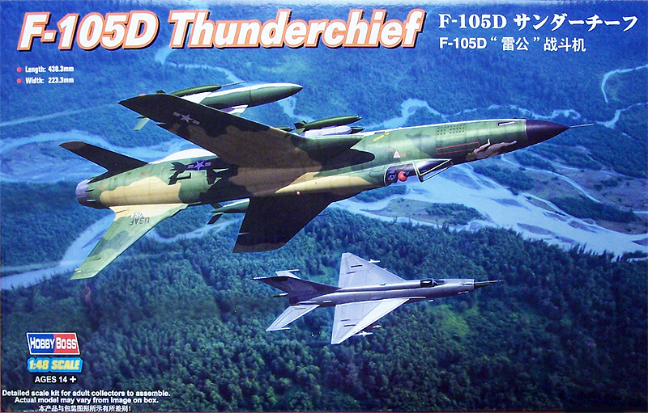
Kit #80332
MSRP $69.99 $48.99 from Squadron Mail Order
Images and text Copyright © 2011 by Matt Swan
Developmental Background
The Air Force called it the Thunderchief but the crews called her “Thud” because that was the sound she made when she crashed. Republic Aviation began development of the F-105 in 1952 as a direct replacement for the F-84F Thunderflash. The design went through well over 100 configurations before the final single seat supersonic concept was settled on. Initial interest with the Air Force was high and an introductory order for 199 aircraft was placed. It did not take long before this was reduced to 46 aircraft. One of the primary requirements of the airframe was to be able to deliver a nuclear bomb. While this mission profile was thankfully never employed the resulting bomb load capability of the type exceeded that seen on World War 2 B-17s. In the upcoming conflict in Vietnam this would prove most useful. The prototype first flew in 1955 and the type began entering service in 1958. Ultimately the design resulted in the largest single engine fighter ever employed by the USAF.
During the early days of the Vietnam War the Thunderchief flew over 20,000 missions as the primary strike bomber. Two seat versions were developed as the F and G which were used as Wild Weasel aircraft tasked with suppression of enemy air defenses. These aircraft and their flight crews were the first units in enemy airspace and the last units out. As the war progressed the ground interdiction role was taken over by F-4 Phantoms but the Wild Weasel variation continued in service until 1984. The Thunderchief was a large, fast aircraft with a smooth ride and impressive load capability but lacked the high maneuverability to be an effective interceptor. Regardless the type did manage to rack up a kill record of 27.5 enemy aircraft during the Vietnam War.
The Kit
Essentially this kit is simply a scaled down version of the earlier Trumpeter 1/32 scale release back in 2008, even the parts layout on the sprues is nearly identical – just smaller and simplified to a degree. The kit consists of 245 gray injection molded parts on eight sprues plus an abbreviated sprue of clear parts, by abbreviated I mean it is shot with the F-105G canopy then this half apparently is removed before packing. We have lots of rivet detail on the primary exterior surface parts and one might be tempted to believe that the mad Riveter from Trumpeter has been at work but the reality of the situation is that the 105 had a boatload of flush rivets and these do a relatively good job of replicating that so don’t have a cow when you see these. The parts in general are all of good quality with good fit, no sink marks or flash. There are a few injector pin markings the most annoying of which are located inside the main gear covers and along the gear struts. Even these are not terrible and can be dealt with fairly easily.
Just like it’s larger cousin from Trumpeter this kit includes a fully detailed Gatling gun and engine. Unfortunately the engine detail cannot be easily displayed unless the model is built with the tail off and the kit does not offer any suggestions on how the modeler might rectify this situation. The nose radar unit is also included and the nose can be modeled in the open position to display this as can the Gatling gun bay and the refueling probe. This kit does not include as comprehensive a selection of external stores as does the 1/32 kit however we do get enough stuff to make it interesting. We can load 8 Mk. 82 bombs or a couple AGM 12B Bullpups along with some wing tanks and a center line tank. The kit provides a basic installation guide for the munitions or the creative modeler can branch out on his own and move them around to suit. The front office is adequate with raised surface detail and colorful instrument decals which should provide for a nice finish. There are plenty of delicate little detail parts and care will be needed when removing and handling them.
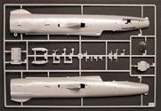
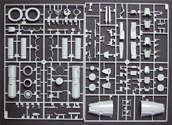
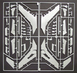
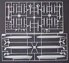
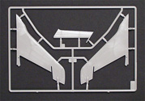
You may click on these small images to view larger pictures
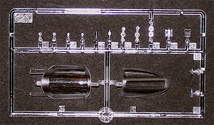
Decals and Instructions
Kit instructions are delivered on an A5 sheet folded concertina style with a separate full color sheet as a painting and marking guide. The assembly instructions contain several well laid out line drawings with plenty of color call-outs scattered throughout. A few load-out combinations are suggested and the sheet wraps up with a complete parts map and paint chart. The full color sheet is a double sided A4 showing not only exterior painting for two units from the 457th TFS but also weapons painting and stenciling.
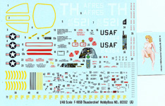
Kit decals offer markings for two aircraft along with plenty of service stencils. On a separate sheet we get the artwork for 'Pussy Galore' which is most likely provided separately so it can be easily pulled from the kit should the political correctness police show up. Print registry is okay with a few slight mismatches here and there, color density is good however the national markings are just a little under sized. Overall decals are pretty nice.
Construction
While the front office right from the box does appear adequate AMS dictates that I must do better so while waiting for my Eduard detail set I'll begin with some external stores. We're going to be converting one of the wing bomb mounts from four to six stations and slinging it under the center-line position. Interior wing hard-points will have fuel tanks and we will have to come up with something for an ECM pod on the Starboard outermost hard-point.
4/18/2011
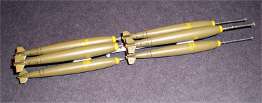
To convert a wing bomb rack I simply shaved off a set of side mounts from the second wing rack and reattached them to my new center rack. The bombs were done up per the kit instructions but I should have known better; the bomb color is a little light and the fuses that Trumpeter provides for these things were rarely if ever used in theater. I spoke to a Vietnam area crew chief who serviced these birds and he can only remember once having seen that kind of extended fuse in use. Oh well, a minor thing and not completely inaccurate. I'm still going to have to fabricate a new belly hard-point for these but that will wait until the fuselage is assembled and the landing gear are in place.
Moving right along I next address the wings. Trumpeter gives us all sorts of open spoilers and separate flaps for this thing but for the life of me I cannot find a single reference picture showing this aircraft at rest with flaps dropped or spoilers open. Those would only be in those positions on landing and then quickly closed up. Okay, not a real big deal, we'll just fit each piece closed and glue it in place. Well, it's not quite that easy as these pieces do not want to fit very well in the closed position. I had to carefully sand the spoilers to thin the depth of about half the pieces and carefully trim the ends of the flaps before everything fit well closed up. Okay, that’s fixed and things look pretty good so I'll move along.
My Eduard detail set for the cockpit arrived so I can begin to work over the front office now. The Eduard set is a pre-colored and pre-adhesive backed set. This is the first time I have worked with the self-adhesive sets by Eduard and am somewhat hesitant. The instructions indicate that once these pieces are placed they will be virtually impossible to move and will most likely be destroyed if the modeler attempts to lift them after placement. I don't like the sounds of that at all. With this stuff in mind I begin by shaving off the side console details and gluing the basic tub together, same with the seat. All of these base pieces are airbrushed aircraft gray and the build-up begins. The seat went together very well and looks great however the PE adhesive does not want to stick very well at all. I ended up enhancing the adhesion with some spots of superglue.
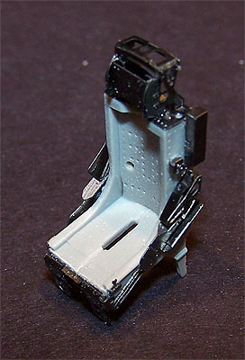
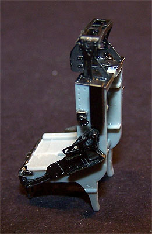
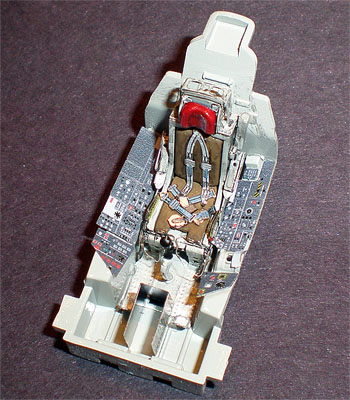
With the seat complete I move to the cockpit tub. Starting with the side console PE parts I immediately think something is wrong as the Eduard pieces have some serious overhang on the plastic part. Once I test fit the tub to the fuselage I see the problem; the kit tub fits like crap to the fuselage and Eduard is remedying this problem. After more than a few days of fiddling around with these little PE parts and being really thankful that I invested in good magnifying glasses the tub is complete and ready to install.
The engine provided is really very nice but unless the modeler builds this with the tail cone removed you will never be able to see it. I simply painted the burner can and intake fan aspects of the engine and glued it in place. The nose gear is completed and installed and I am ready to close up the fuselage.
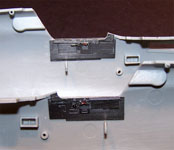


You may click on these small images to view larger pictures
Construction Update 9/5/11
Wow, nearly five months since an update on this one, bet ya'll thought I had dropped this build off in a deep, dark hole. Being that it is a Hobby Boss (aka Trumpeter) kit that might be understandable but the truth is slightly more mundane. I do not have air conditioning in my studio. Yeah, barbaric, I know. In the mid-summer months here in Northern Ohio the temperature can get up to around 100 degrees and as my studio is a second floor site things can get pretty toasty up there. So I tend to spend those couple of hot months down in the air conditioned parts of the house surfing the net or watching movies. Now that the tropical storm season has begun down in the gulf it pushes some pretty nice air into my neck of the woods and the modeling desk gets dusted off.
I had been slipping little periods of work in here and there, the main gear are all in place, painted and masked off. The fin, rudder and stabilizers are in place and all the various seams have been puttied and sanded smooth. 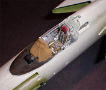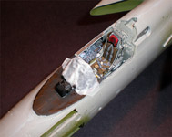I did some more work in the cockpit getting ready to install the windscreen. By using the Eduard PE parts in the cockpit I had placed several small instrument boxes on top of the instrument panel as it should be. However, a picture of actual aircraft show the canvas cover forward of the IP raises up and covers these parts as well as the lower sections. To replicate this I took a piece of tissue paper, cut it to size then soaked it in white glue before draping it across the coaming. Once dry it was painted and ended up looking pretty good. Once that was done I could attach the clear part which had already been treated with Future and masked with strips of tape. The remainder of the cockpit was carefully masked with a combination of tissue paper and masking tape.
More masking was in my future, much more masking. I had to stuff all the landing gear bays, intakes and engine exhaust before I could start painting. Painting was a multi-step process where I first pre-shaded with very thin Testors flat black then applied the white undersurface color. Now that gets masked, the pre-shade gets touched up at the demarcation and the next color goes on. More masking, more touch-up and another color and so it went until all the camo pattern was complete. Once the main masks were removed things still needed a little touch-up until we ended up with this result.
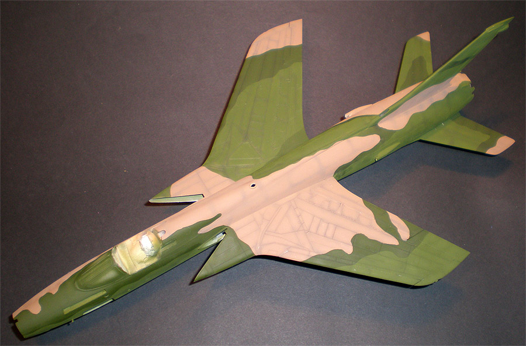
2/24/2012
It's time to wrap this project up, the kit components of the nose radar assembly are put together then dressed with some short pieces of guitar string. Tail feathers are done with various shades of Alclad lacquer and installed. Landing gear is finished off and balance is checked before radar assembly is glued in place. I ended up with about four lead sinkers in the nose to keep her on all three wheels. After a base coat of Future to seal the model most of the kit decals were applied. I made crew placards for the canopy frame, new tail numbers and a Snoopy image on my computer then had them printed to thermal decal paper at my local print shop – that cost me a buck in extra materials.
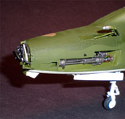
The gun bay was completed with a few extras in the form of magnet wire details added. Photo etched detail were added to the interior of the canopy frame after having been masked and painted. The model was shot with two coats of Micro-flat to seal things up and dull it down a bit then the final clear parts were added to the mix. I had spent some time adding those miserable yellow strips to the canopy frames then looked at my reference material to find the aircraft I was modeling di not have them. After taking these pictures and before shipping the model to the final owner I removed them with some masking tape. As a final detail I added the photo etched boarding ladder from Eduard. This is a nice little piece that really adds to the look of the model however the metal parts do not match the images in the instructions so you have to think about things a little before you start to bend. Once complete it clips on to the side of the fuselage just like the real thing and looks very cool.
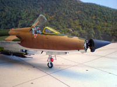
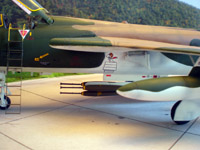
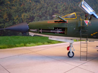
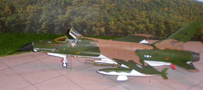
You may click on these small images to view larger pictures
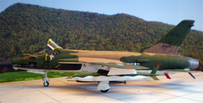
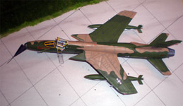
|


{kind=link}
{kind=link}
{kind=link}
{kind=link}
{kind=link}
{kind=link}
{kind=link}
{kind=link}
{kind=link}
{kind=link}
{kind=link}
{kind=link}
{kind=link}
{kind=link}
{kind=link}
{kind=link}
{kind=link}
{kind=link}